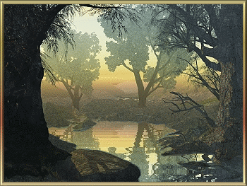
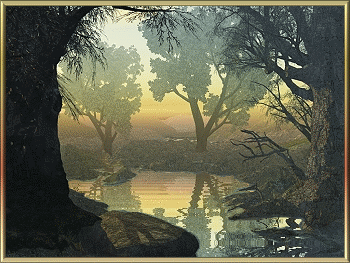

Porque Geologia?
Geologia é a ciência que estuda a Terra. Parece muito amplo?
E realmente é, trata-se de uma das mais abrangentes ciências naturais. Os geólogos estudam a
composição, a estrutura e a evolução do globo terrestre, bem como os processos que ocorrem no seu
interior e superfície. Para a compreensão disso tudo é necessário ao profissional um bom
conhecimento de física, química, biologia e matemática. De fato, como dizem os filósofos, há muito
mais coisas entre o céu e a Terra do que pode supor a nossa vã filosofia.
São depósitos minerais, bacias petrolíferas, fraturas e falhas geológicas, águas
subterrâneas,
fósseis, poluição, cidades, seres vivos… É trabalho que não acaba mais, melhor para o geólogo. Já
deve ter dado para notar que a Geologia não envolve apenas o estudo das rochas como muitos pensam.
Seu conhecimento é de grande interesse científico e social. Os geólogos são capazes de identificar e
avaliar reservas minerais, identificar zonas geologicamente instáveis e propor medidas de segurança.
Para quem pensa em fazer Geologia na UFC, uma boa notícia: a demanda por profissionais nunca esteve
tão alta. E deve continuar assim pelos próximos anos. O principal motivo é o aquecimento dos setores
de mineração e de petróleo, com o início da exploração do pré-sal.
A geologia é uma disciplina científica fascinante que
estuda a
Terra, sua estrutura, composição, processos e história. É um campo multidisciplinar que combina
conhecimentos de física, química, biologia e matemática para compreender as complexidades do nosso
planeta.
A Terra é um lugar dinâmico, onde ocorrem constantes mudanças e transformações. A geologia nos ajuda
a entender essas mudanças e a decifrar os segredos da história do nosso planeta, que se estende por
bilhões de anos. Por meio da análise de rochas, minerais, fósseis e da observação de processos
geológicos atuais, os geólogos são capazes de reconstruir a evolução da Terra ao longo do tempo
geológico.
Uma das principais áreas de estudo da geologia é a tectônica de placas. A teoria da tectônica de
placas descreve como as placas que compõem a crosta terrestre se movem e interagem entre si. Esses
movimentos podem resultar em eventos geológicos como terremotos, vulcões e formação de montanhas.
Compreender a tectônica de placas é fundamental para entender a distribuição dos continentes, a
formação de cadeias montanhosas e a ocorrência de atividades sísmicas e vulcânicas.
Outro aspecto importante da geologia é o estudo dos recursos naturais. Os geólogos investigam a
ocorrência e a distribuição de minerais, combustíveis fósseis, água subterrânea e outros recursos
valiosos. Eles desempenham um papel crucial na identificação de depósitos minerais economicamente
viáveis, ajudando na exploração e extração responsável desses recursos.
Além disso, a geologia está intimamente ligada à compreensão e mitigação de desastres naturais. Os
geólogos estudam as causas e os efeitos de eventos como terremotos, tsunamis, deslizamentos de terra
e inundações, buscando maneiras de prever, monitorar e minimizar os danos causados por esses
eventos. Suas descobertas e pesquisas contribuem para o desenvolvimento de estratégias de
planejamento urbano, construção de infraestrutura resistente e sistemas de alerta precoce.
A geologia também desempenha um papel fundamental na compreensão das mudanças climáticas e seus
impactos na Terra. O estudo dos registros geológicos, como os sedimentos encontrados em camadas de
rochas e os testemunhos de gelo das regiões polares, ajuda os cientistas a reconstruir as variações
climáticas passadas e a prever os possíveis cenários futuros.
Em resumo, a geologia é uma ciência que nos permite entender o funcionamento interno da Terra, sua
história e os processos que moldaram o nosso planeta ao longo de bilhões de anos. Seja na exploração
de recursos naturais, na compreensão de desastres naturais ou na investigação das mudanças
limáticas, a geologia desempenha um papel essencial na nossa sociedade, fornecendo conhecimento
valioso para a tomada de decisões informadas e sustentáveis.
 
